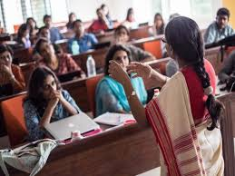

Computer Science and Engineering
Faculty: 4 | Average Experience: 9 years

Dr. Ananya Verma — Professor (Algorithms)
15 years — Algorithms & competitive programming
Achievement: Supervised 20+ projects; multiple publications.

Prof. Vikram Patel — Associate Professor (Systems)
12 years — Distributed systems & cloud
Achievement: Led cloud internship programs with industry partners.
Dr. Meera Joshi — Assistant Professor (Databases)
7 years — Databases & data integration
Achievement: Mentored industry capstones with high adoption.
Dr. Arjun Rao — Assistant Professor (AI Foundations)
2 years — Applied ML
Achievement: Guided student AI projects into startup pilots.
Department Achievements
- Consistently high placement rate with alumni at major tech firms.
- Multiple student wins at regional hackathons and coding competitions.
- Active industry partnerships for internships and projects.
CSE (Artificial Intelligence & Machine Learning)
Faculty: 4 | Average Experience: 8 years
Dr. Nidhi Menon — Associate Professor (ML)
10 years — Supervised learning
Achievement: Organized AI bootcamps; published ML research.
Dr. Rahul Bhat — Assistant Professor (Deep Learning)
6 years — Deep learning & CV
Achievement: Student CV projects commercialized.
Prof. Sangeeta Rao — Assistant Professor (NLP)
8 years — NLP
Achievement: Led NLP internships and student publications.
Dr. Kavita Nair — Assistant Professor (AI Ethics)
8 years — AI ethics
Achievement: Contributor to regional AI fairness panels.
Department Achievements
- Faculty publications in ML venues and student internships in AI companies.
- Regular AI workshops and industry-led capstones.
CSE (Data Science)
Faculty: 4 | Average Experience: 9 years
Dr. Priyanka Singh — Professor (Statistics)
14 years — Statistical modeling
Achievement: Supervised many industry capstones.
Dr. Sandeep Kulkarni — Associate Professor (Data Engineering)
9 years — Data engineering
Achievement: Built data platforms for student projects.
Dr. Neha Gupta — Assistant Professor (Visualization)
6 years — Data visualization
Achievement: Placed students as analysts in product firms.
Prof. Rohan Iyer — Assistant Professor (Applied ML)
6 years — Applied ML
Achievement: Led capstones with startup collaborations.
Department Achievements
- Industry-sponsored capstones and strong analyst placements.
- Data challenges with corporate partners.
Electronics and Communication Engineering (ECE)
Faculty: 4 | Average Experience: 10 years
Prof. Amit Desai — Professor (Embedded Systems)
18 years — Embedded systems & IoT
Achievement: Mentored IoT prototypes showcased at tech fairs.
Dr. Rohit Sharma — Associate Professor (Signal Processing)
12 years — Signal processing
Achievement: Published research in signal analysis.
Prof. Lata Iyer — Assistant Professor (VLSI)
9 years — VLSI & microelectronics
Achievement: Guided chip-design mini-projects.
Dr. Kavya Menon — Assistant Professor (Communications)
1 year — Wireless communications
Achievement: Engaged in telecom industry projects.
Department Achievements
- Embedded and VLSI student projects showcased at tech fairs.
- Collaborative telecom projects with industry partners.
Electrical and Electronics Engineering (EEE)
Faculty: 4 | Average Experience: 11 years
Prof. Mohan Prakash — Professor (Power Systems)
20 years — Power systems
Achievement: Led microgrid simulation projects.
Dr. Deepa Nair — Associate Professor (Control Systems)
10 years — Control systems
Achievement: Guided automation projects with industry.
Dr. Hari Krishnan — Assistant Professor (Power Electronics)
7 years — Power electronics
Achievement: Student prototypes for efficient converters.
Prof. Sunita Reddy — Assistant Professor (Energy Systems)
8 years — Renewable energy
Achievement: Organized regional renewable workshops.
Department Achievements
- Contributions to regional energy projects and renewable workshops.
- Student projects on smart-grid simulations and energy efficiency.
Mechanical Engineering
Faculty: 4 | Average Experience: 11 years
Dr. Suman Rao — Professor (Design)
16 years — Mechanical design & CAD
Achievement: Mentored national design contest teams.
Prof. R. Chandrashekhar — Associate Professor (Manufacturing)
12 years — Manufacturing processes
Achievement: Built industry internship collaborations.
Dr. Maya R. — Assistant Professor (Thermofluids)
8 years — Thermofluids
Achievement: Published applied thermal research.
Dr. Prakash Iyer — Assistant Professor (Mechatronics)
7 years — Mechatronics & robotics
Achievement: Guided robotics projects that won regionals.
Department Achievements
- Students placed in national design and robotics contests.
- Strong ties with manufacturing partners for internships.
Civil Engineering
Faculty: 4 | Average Experience: 11 years
Dr. S. Radha — Professor (Structural Engineering)
18 years — Structural engineering
Achievement: Research in seismic-resistant design; consultancy work.
Prof. Gaurav Mehta — Associate Professor (Geotechnical)
12 years — Geotechnical engineering
Achievement: Field projects on ground improvement techniques.
Dr. Latha Srinivas — Assistant Professor (Construction Management)
9 years — Construction management
Achievement: Led student consultancy projects for communities.
Prof. Neeraj Sharma — Assistant Professor (Water Resources)
6 years — Water resources
Achievement: Projects on sustainable water systems.
Department Achievements
- Student projects in sustainable construction and water conservation.
- Alumni working in major infrastructure and consultancy firms.